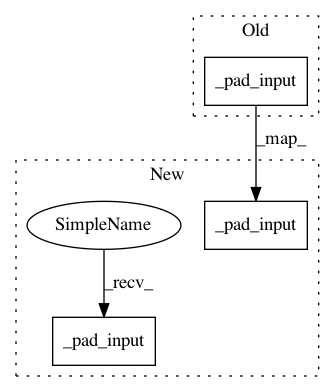

1ed54c01c05043c672ec6986529730a1fcf6a337,onnx_tf/handlers/backend/dilated_maxpooling.py,DilatedPooling,dilated_maxpool_with_argmax,#DilatedPooling#Any#,322
Before Change
// spatial_size != 2
assert self.spatial_size == 2
self._pad_input()
if list(self.dilations) != [1] * self.spatial_size or \
force_custom_impl:
new_input = self._reduce_dilations()
After Change
if list(self.dilations) != [1] * self.spatial_size or \
force_custom_impl:
// pad the input
self._pad_input()
new_input = self._reduce_dilations()
kernel_shape = [1] + list(self.kernel_shape) + [1]
pooled, new_ind = tf.nn.max_pool_with_argmax(
new_input, ksize=kernel_shape,
strides=kernel_shape, padding="VALID")
new_ind = self._calc_orig_ind(new_ind)
else:
if type(self.padding) is list or \
self.padding.lower() == "same_lower":
// pad the input
self._pad_input()
padding_ = "VALID"
elif self.padding.lower() == "same_upper":
padding_ = "SAME"
In pattern: SUPERPATTERN
Frequency: 4
Non-data size: 3
Instances
Project Name: onnx/onnx-tensorflow
Commit Name: 1ed54c01c05043c672ec6986529730a1fcf6a337
Time: 2019-10-17
Author: sdmonov@us.ibm.com
File Name: onnx_tf/handlers/backend/dilated_maxpooling.py
Class Name: DilatedPooling
Method Name: dilated_maxpool_with_argmax
Project Name: onnx/onnx-tensorflow
Commit Name: 9df80d16f54eb3e90dc3437669aaec3c1cd8f6d0
Time: 2019-10-17
Author: sdmonov@us.ibm.com
File Name: onnx_tf/handlers/backend/dilated_maxpooling.py
Class Name: DilatedPooling
Method Name: dilated_maxpool
Project Name: onnx/onnx-tensorflow
Commit Name: 9df80d16f54eb3e90dc3437669aaec3c1cd8f6d0
Time: 2019-10-17
Author: sdmonov@us.ibm.com
File Name: onnx_tf/handlers/backend/dilated_maxpooling.py
Class Name: DilatedPooling
Method Name: dilated_maxpool_with_argmax
Project Name: onnx/onnx-tensorflow
Commit Name: 1ed54c01c05043c672ec6986529730a1fcf6a337
Time: 2019-10-17
Author: sdmonov@us.ibm.com
File Name: onnx_tf/handlers/backend/dilated_maxpooling.py
Class Name: DilatedPooling
Method Name: dilated_maxpool